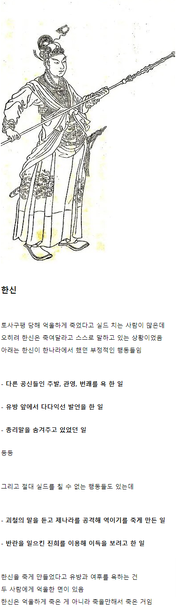
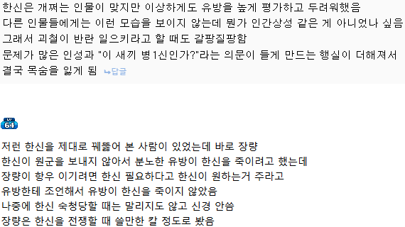
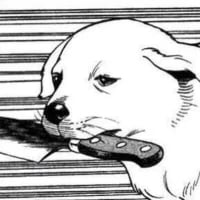

진짜 딱 맞는 표현이네 ㅋㅋㅋ
한신밑에 책사가 배신때리라고 빨리 왕이 되라고 했는데 결국 말안들음 한신도 결국 항우같이 전쟁의 신이지만 정치를 잘 못함. 사람 기질이 그런듯함.
천하대장군이 누구앞에서 입바른 소리 할수 있겠음? 걍 모가지 썰 생각뿐이 없지.
장량이 진짜 처세 끝판왕인듯
인생은 가후처럼 아님?
장량 vs 가후 면 누가나음?
죽을때까지 선타는 가후보단 말년은 편한 장량이 나을지도?
가후 파란만장했나보네
장수 밑에 있다가 항복하면서 전향했는데
하필이면 그 장수가 통수쳐서 조조 아들이랑 가장 아끼던 전위를 죽이는 바람에...
게다가 이전 주군 라인업이 동탁-이곽,곽사-장수라 ㅋㅋ
장량이 나을듯 ㅎㅎ
역시 가후 개능력자네ㄷㄷㄷ
난세에 개노답 주군 밑에서 라인 갈아타면서
천수를 누리고 살다니
장량은 항장도 아니고 평생 유방 밑에 있다 그 여후조차 우대했는데 당연히 장량이지. 근데 초반이 좀 기구하긴 해..
가후는 너무 난이도가높음 ㅋㅋㅋ
인생은 가후처럼 이란 말은 그냥 웃자고 한 인터넷 밈이 정설처럼 정착한거라 생각함.
가후는 당대 상위계층이면 당연히 형성해야 하는 혼맥, 인맥 등 네트워킹 아무것도 못 하고 혼자 고립되어있다 죽음.
저 때는 관직도 추천받아 오르는 시대여서 유력 인사들과의 네트워킹이 정말 중요했음.
높은 사람도 후대의 유망주를 얼마나 많이 알고 있는가, 얼마나 괜찮은 놈들이 자기를 따르고 있는가, 누구를 추천해줄 수 있는가가 큰 권력이자 명예기도 했고. 근데 가후는 그런 권한도 명예도 일절 없었고 명가와 신흥귀족들이 서로 혼맥 맺을 때 자식들 결혼도 평범한 집안이랑 시킴. 이정도면 상위계층 내에선 따돌림 당한거나 다름없음.
조조가 용서했으니까 일단 넘어가긴 했는데 위나라 후계자 죽게 한 놈이란 낙인은 못 지우지.
그리고 가후 자체가 동탁 사후에 이각,곽사같은 양아치들한테 붙어서 수도권 일대 말 그대로 초토화시켜
백성들 굶어죽고 도적떼 되는데 일조한 인간이라 이런 따돌림 받을 수 밖에 없음.
말 그대로 목숨만 건진거임
살아만 있는거네
ㄷㄷ
알려줘서 ㄱㅅㄱㅅ
ai에게 물어보니까 일부러 안 만든 것이라고 함 살아남기 위해서
가후의 생애에 대해서는 알지만 왜 혼맥, 인맥을 만들지 않았는가에 대한 근본적인 이유는 몰라서 ai들에게 물어봤더니 재미있게도 셋 다 똑같은 결론을 뱉더라
가후는 항장이기 때문에 위나라 내에서 기반이 없어서 혼맥, 인맥으로 권력 기반을 만들면 모반의 의심을 받을 수 있었기 때문에 일부러 만들지 않았던 것이다라고 공통적으로 말하더라고.
즉, 혼맥, 인맥 네트워크 만드는 순간 숙청당할 수 있기 때문에 안 한 것이라고 하네
일단 딥시크랑 제미나이, 지피티 셋에게 왜 혼맥, 인맥 만들지 않았는지 물어봤었음
물론 ai 답변이 셋 다 같다고 해도 틀릴 수 있기 때문에 반박한다면 적극 수용할게
진평!
역사는 승자의 기록인데
죽일구실 각색해서 기록한건 아님?
승자의 역사서인 한서 말고 사마천 사기에서도 처세술 ㅄ으로 나옴
한신 죽일때는 통일이후 아니냐?
한마디 거들다가 장량도 죽을지도 모르는데 뭘 말려
심지어 유방은 그럼에도 계속 살려주려고 나름 노력했음
근데 여후가 유방 죽고 나면 지가 감당 안될거 같으니까 죽인거임
물론 다른 신하들은 한신 죽인다는데 모두 따봉 눌러서 동의하긴 했음
ㅋㅋㅋㅋ
한신덕에 통일한것도 있으니뭐 ㅋㅋㅋ
거기다 아니꼽게는해도 반란한것도 아니고
여후가 지 권력에 방해되서 죽인것도맞음 ㅋㅋㅋㅋ
왜죠랩ㅎ
저때가 기원전 2, 3세기 정도라 참고할만한 역사가 춘추전국시대말곤 없어서 그런걸지도
한신 이전엔 중원에 한신 같은 케이스가 별로 없었고 실적도 한신이 역대급이었음(백기도 잘 나갔긴한데 백기는 소양왕이랑 대놓고 사이가 안 좋기도 하고 진나라가 위기에 빠진 적이 없음)
과제 해결 능력만 보면 분명히 머리가 좋은데,
본인 마음에 어떤 욕심이 생겼을 때는 (권력욕, 성욕, 물욕, 경쟁심 등등) 즉시 저능아 행동을 하는 사람이 은근 역사 속에 흔함
뭐 승자의 역사니까 아무래도 좀 걸러 들을 필요가 있긴 하지. 반역 일으킬때도 증좌가 명확하지 않았고, 반역 할라면 제나라 왕때 했으면 유방 발라먹을 수도 있었고
딱 전쟁만 잘하고 군영 내 민심 잡기나 부하장수랑 관계 맺기(게이섹스를 했다는게 아님 시발)
이런 매력은 진짜 좆도없었음
유방이 한신 인장 뺐은 것도 유방 왔는데 한신한테 유방이 왔다고 알린 사람은 하나도 없고 다들 그냥 유방이랑 히히 재밋당 하면서 잘 놀다가 한신이요? 저기서 자고 있을 걸요? 하고 안내해서 그냥 유방이 슥 들어가서 군권 슥 회수한거임
그와중에 한신 새끼 죽기전에 괴철 말대로 안해서 죽는구나! 해서 괜히 괴철 끌려가서 같이 죽을 뻔했지만 이번에도 세치혀로 살아남음 진짜 언변의 신이다
포차
사냥개 : 아~~~~~ 주인님 물고싶다~~~~~